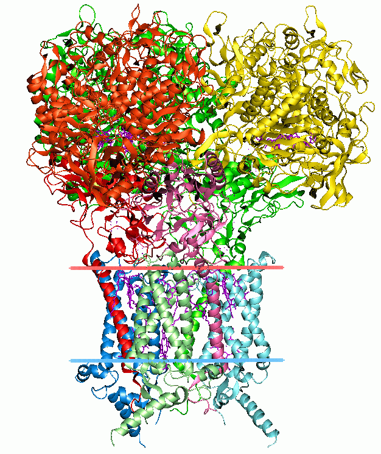
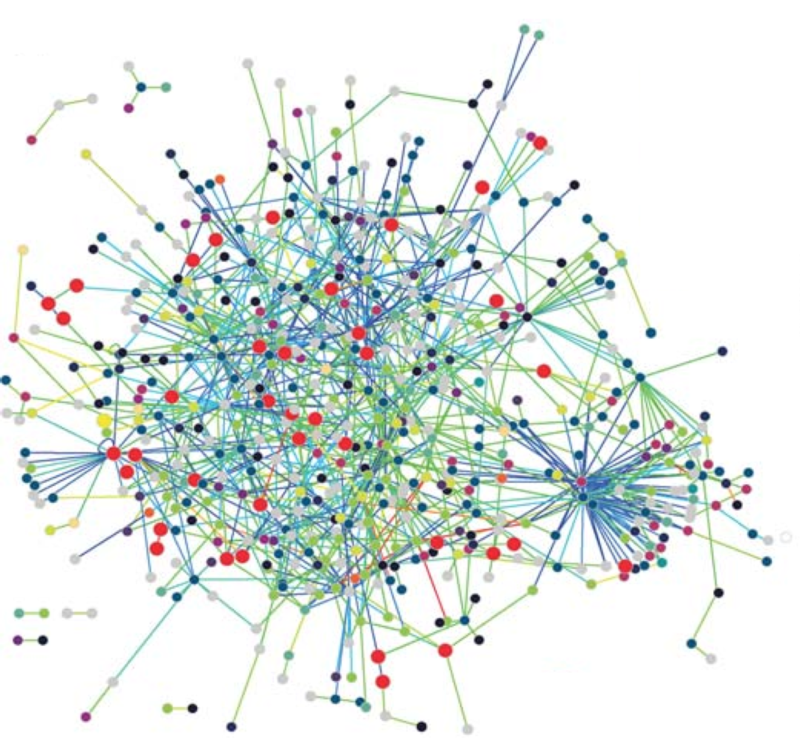

| "Structural bioinformatics" |  | Protein structure prediction is another important application of bioinformatics. The amino acid sequence of a protein, the so-called primary structure, can be easily determined from the sequence on the gene that codes for it. In the vast majority of cases, this primary structure uniquely determines a structure in its native environment. (Of course, there are exceptions, such as the bovine spongiform encephalopathy – a.k.a. Mad Cow Disease – prion.) Knowledge of this structure is vital in understanding the function of the protein. |
|---|---|---|
| "Molecular interaction networks" |  | Tens of thousands of three-dimensional protein structures have been determined by X-ray crystallography and protein nuclear magnetic resonance spectroscopy (protein NMR) and a central question in structural bioinformatics is whether it is practical to predict possible protein–protein interactions only based on these 3D shapes, without performing protein–protein interaction experiments. A variety of methods have been developed to tackle the protein–protein docking problem, though it seems that there is still much work to be done in this field. |
Steve Starger"With recent news stories pounding us with tales of genetically altered foods, human cloning, and other subjects that were once the province of science fiction writers and social critics, it’s hard to get a handle on what’s really happening in the brave new world of genetics." |
||
Historically, the term bioinformatics did not mean what it means today. Paulien Hogeweg and Ben Hesper coined it in 1970 to refer to the study of information processes in biotic systems.[1][2][3] This definition placed bioinformatics as a field parallel to biophysics (the study of physical processes in biological systems) or biochemistry (the study of chemical processes in biological systems)
The primary goal of bioinformatics is to increase the understanding of biological processes. What sets it apart from other approaches, however, is its focus on developing and applying computationally intensive techniques to achieve this goal. Examples include: pattern recognition, data mining, machine learning algorithms, and visualization. Major research efforts in the field include sequence alignment, gene finding, genome assembly, drug design, drug discovery, protein structure alignment, protein structure prediction, prediction of gene expression and protein–protein interactions, genome-wide association studies, the modeling of evolution and cell division/mitosis. Bioinformatics now entails the creation and advancement of databases, algorithms, computational and statistical techniques, and theory to solve formal and practical problems arising from the management and analysis of biological data.
Bioinformatics is a science field that is similar to but distinct from biological computation and computational biology. Biological computation uses bioengineering and biology to build biological computers, whereas bioinformatics uses computation to better understand biology. Bioinformatics and computational biology have similar aims and approaches, but they differ in scale: bioinformatics organizes and analyzes basic biological data, whereas computational biology builds theoretical models of biological systems, just as mathematical biology does with mathematical models. Analyzing biological data to produce meaningful information involves writing and running software programs that use algorithms from graph theory, artificial intelligence, soft computing, data mining, image processing, and computer simulation. The algorithms in turn depend on theoretical foundations such as discrete mathematics, control theory, system theory, information theory, and statistics